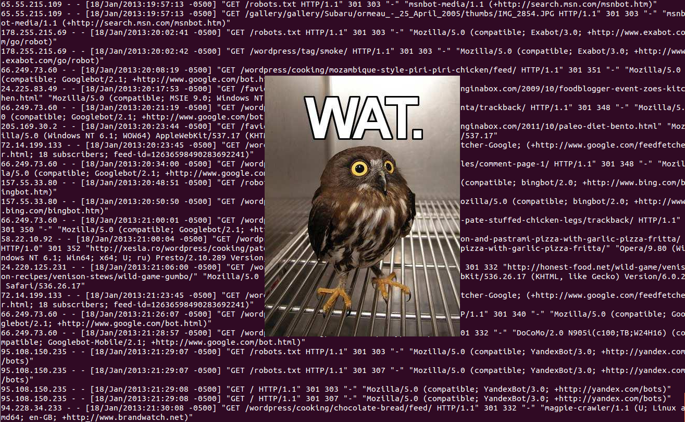
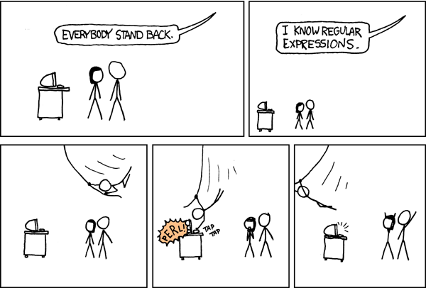
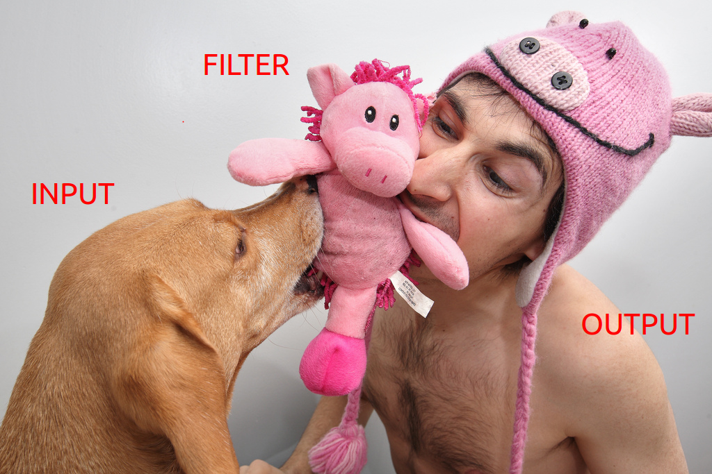
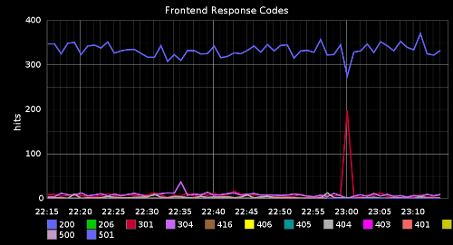
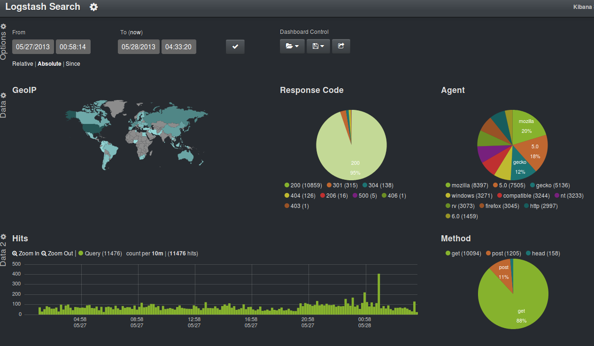
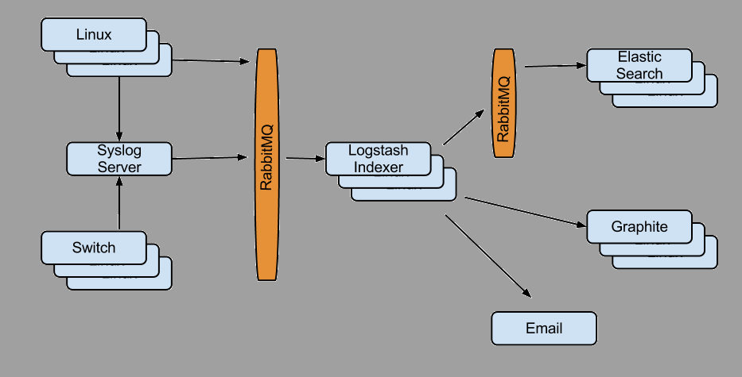

Logstash Primer
Paul Czarkowski / paul@paulcz.net / @pczarkowski
What is a log?
A log is a human readable, machine parsable representation of an event. A log usually consists of TIMESTAMP + DATA
Jan 19 13:01:13 paulcz-laptop anacron[7712]: Normal exit (0 jobs run)
120607 14:07:00 InnoDB: Starting an apply batch of log records to the database...
[1225306053] SERVICE ALERT: FTPSERVER;FTP SERVICE;OK;SOFT;2;FTP OK - 0.029 second response time on port 21 [220 ProFTPD 1.3.1 Server ready.]
[Sat Jan 19 01:04:25 2013] [error] [client 78.30.200.81] File does not exist: /opt/www/vhosts/crappywebsite/html/robots.txt
There's an ISO for that!

ISO 8601
A log is human readable...
208.115.111.74 - - [13/Jan/2013:04:28:55 -0500] "GET /robots.txt HTTP/1.1"
301 303 "-" "Mozilla/5.0 (compatible; Ezooms/1.0; ezooms.bot@gmail.com)"
A human readable, machine parsable representation of an event.

...But logs are NOT !
But they're machine parsable right?
Logs are machine parseable

208.115.111.74 - - [13/Jan/2013:04:28:55 -0500] "GET /robots.txt HTTP/1.1"
301 303 "-" "Mozilla/5.0 (compatible; Ezooms/1.0; ezooms.bot@gmail.com)"
Logs are machine parseable

208.115.111.74 - - [13/Jan/2013:04:28:55 -0500] "GET /robots.txt HTTP/1.1"
301 303 "-" "Mozilla/5.0 (compatible; Ezooms/1.0; ezooms.bot@gmail.com)"
Logs are machine parseable

208.115.111.74 - - [13/Jan/2013:04:28:55 -0500] "GET /robots.txt HTTP/1.1"
301 303 "-" "Mozilla/5.0 (compatible; Ezooms/1.0; ezooms.bot@gmail.com)"
Logstash turns this
208.115.111.74 - - [13/Jan/2013:04:28:55 -0500] "GET /robots.txt HTTP/1.1"
301 303 "-" "Mozilla/5.0 (compatible; Ezooms/1.0; ezooms.bot@gmail.com)"
into that
{
"client address": "208.115.111.74",
"user": null,
"timestamp": "2013-01-13T04:28:55-0500",
"verb": "GET",
"path": "/robots.txt",
"query": null,
"http version": 1.1,
"response code": 301,
"bytes": 303,
"referrer": null
"user agent": "Mozilla/5.0 (compatible; Ezooms/1.0; ezooms.bot@gmail.com)"
}
Logstash Plugins...
Logstash Plugins...
~ 25+ input plugins
- file
- tcp,udp
- amqp, zeromq, redis, sqs
- twitter, irc
- lumberjack
- ...
Logstash Plugins...
~ 20+ filter plugins
- date
- grok
- geoip
- multiline
- metrics
- split
- ...
Logstash Plugins...
~ 40+ output plugins
- Elasticsearch
- StatsD, Graphite, Nagios, PagerDuty
- amqp, zeromq, redis, sqs
- boundary, cloudwatch, zabbix
- lumberjack
- ...
Any idiot can ...
write logstash modules
- Input - Snmptrap
- Filter - Translate
Can do powerful things with [ boilerplate + ] a few lines of ruby
Two Very Important Filters
Let's talk briefly about two filters that are
very important to making our logs useful
Filter - Date
takes a timestamp and makes it ISO 8601 Compliant
Turns this:
13/Jan/2013:04:28:55 -0500Into this:
2013-01-13T04:28:55-0500Filter - grok
Grok parses arbitrary text and structures it.
Makes complex regex patterns simple.
USERNAME [a-zA-Z0-9_-]+
USER %{USERNAME}
INT (?:[+-]?(?:[0-9]+))
MONTH \b(?:Jan(?:uary)?|Feb(?:ruary)?|Mar(?:ch)?|Apr(?:il)?|May|Jun(?:e)?|Jul(?:y)?|Aug(?:ust)?|Sep(?:tember)?|Oct(?:ober)?|Nov(?:ember)?|Dec(?:ember)?)\b
DAY (?:Mon(?:day)?|Tue(?:sday)?|Wed(?:nesday)?|Thu(?:rsday)?|Fri(?:day)?|Sat(?:urday)?|Sun(?:day)?)
COMBINEDAPACHELOG %{IPORHOST:clientip} %{USER:ident} %{USER:auth}
\[%{HTTPDATE:timestamp}\] "(?:%{WORD:verb} %{NOTSPACE:request}
(?: HTTP/%{NUMBER:httpversion})?|-)" %{NUMBER:response}
(?:%{NUMBER:bytes}|-) %{QS:referrer} %{QS:agent}
Remember our apache log from earlier?
Define Inputs and Filters.
input {
file {
type => "apache"
path => ["/var/log/httpd/httpd.log"]
}
}
filter {
grok {
type => "apache"
pattern => "%{COMBINEDAPACHELOG}"
}
date {
type => "apache"
}
geoip {
type => "apache"
}
}
Define some outputs.
output {
statsd {
type => "apache"
# Count one hit every event by response
increment => "apache.response.%{response}"
}
elasticsearch {
type => "apache"
}
}
Instant Graphification !

Kibana

Kibana
Literacy Amongst Bieber Fans.
Logstash - Twitter Input
input {
twitter {
type => "twitter"
keywords => ["bieber","beiber"]
user => "username"
password => "*******"
}
}


performance... events/sec
- HP BL460, 48Gb, 24 Cores.
- Several Filters - Groks, Mutates, etc
- + 8 workers
Other cool stuff
input {
exec {
type => "system-loadavg"
command => "cat /proc/loadavg | awk '{print $1,$2,$3}'"
interval => 30
}
}
filter {
grok {
type => "system-loadavg"
pattern => "%{NUMBER:load_avg_1m} %{NUMBER:load_avg_5m}
%{NUMBER:load_avg_15m}"
named_captures_only => true
}
}
output {
graphite {
host => "10.10.10.10"
port => 2003
type => "system-loadavg"
metrics => [ "hosts.%{@source_host}.load_avg.1m", "%{load_avg_1m}",
"hosts.%{@source_host}.load_avg.5m", "%{load_avg_5m}",
"hosts.%{@source_host}.load_avg.15m", "%{load_avg_15m}" ]
}
}
Scaling logstash
Further Reading
- http://www.logstash.net/
- http://www.logstashbook.com/ [James Turnbull]
- https://github.com/paulczar/vagrant-logstash
- http://jujucharms.com/charms/precise/logstash-indexer
KTHXBAI
Paul Czarkowski / paul@paulcz.net / @pczarkowski